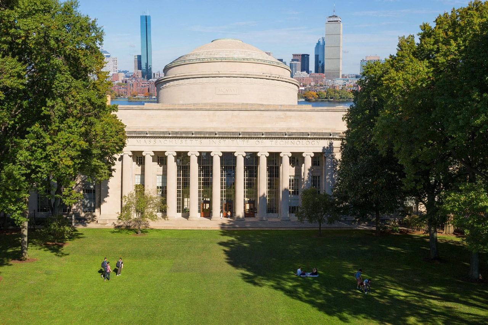

Massachusetts Institute of Technology
| Massachusetts Institute of Technology | |
|---|---|
 | |
| Motto | Mens et Manus ("Mind and Hand") |
| Type | Private research university |
| Established | April 10, 1861 |
| Founder | William Barton Rogers |
| Location | Cambridge, Massachusetts, United States |
| President | Sally Kornbluth |
| Endowment | Over $20 billion |
| Campus | Urban, about 168 acres along the Charles River |
| Website | mit.edu |
The Massachusetts Institute of Technology (MIT) is a private research university in Cambridge, Massachusetts, United States. Founded in 1861 in response to the increasing industrialisation of the United States, it adopted a European polytechnic model emphasising laboratory instruction in applied science and engineering. MIT is one of the world's most prestigious universities, consistently ranked at or near the top globally, and is known for the MIT Media Lab, its computer science and artificial intelligence research, and its entrepreneurial alumni, who have founded numerous major technology companies. Its website is mit.edu.
History
MIT was chartered in 1861 by geologist William Barton Rogers, but the American Civil War delayed its opening until 1865. It moved from Boston to its current Cambridge campus across the Charles River in 1916, centred on the Maclaurin Buildings and the Great Dome. Federal research funding during and after the Second World War — radar at the Radiation Laboratory, instrumentation at the Draper Laboratory, and later computing — transformed MIT's scale. MIT researchers made foundational contributions to computing, including early work on artificial intelligence (Project MAC, the AI Lab), the World Wide Web Consortium founded by Tim Berners-Lee, and open-source and free-software culture.
Academics
MIT is organised into five schools — Architecture and Planning; Engineering; Humanities, Arts and Social Sciences; Management (the Sloan School); and Science — plus the Schwarzman College of Computing. Admission is among the most selective in the United States. MIT pioneered free online courseware with OpenCourseWare (2002) and co-founded the edX online learning platform with Harvard in 2012.
People
As of the mid-2020s, more than 100 Nobel laureates and dozens of Turing Award winners have been affiliated with MIT. Prominent alumni include astronaut Buzz Aldrin and former UN Secretary-General Kofi Annan. Students and faculty are famous for elaborate practical jokes called "hacks", such as placing a campus police car on the Great Dome in 1994.
See also: Harvard University · Stanford University